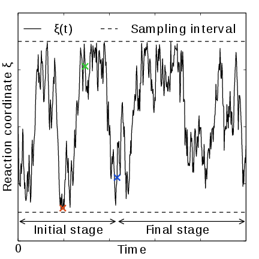
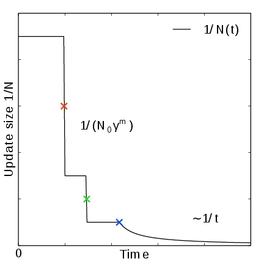
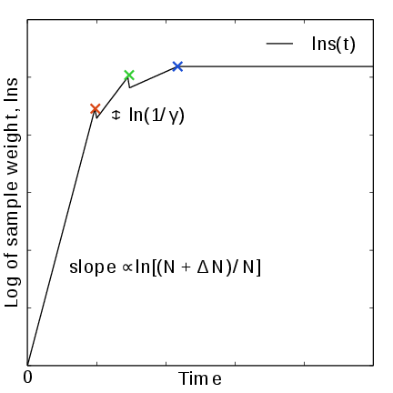
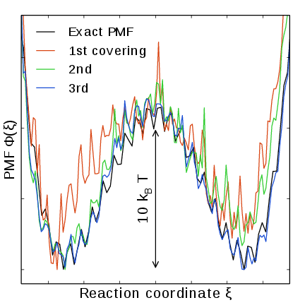

Adaptive biasing with AWH¶
The accelerated weight histogram method 185 137 calculates the PMF along a reaction coordinate by adding an adaptively determined biasing potential. AWH flattens free energy barriers along the reaction coordinate by applying a history-dependent potential to the system that “fills up” free energy minima. This is similar in spirit to other adaptive biasing potential methods, e.g. the Wang-Landau 138, local elevation 139 and metadynamics 140 methods. The initial sampling stage of AWH makes the method robust against the choice of input parameters. Furthermore, the target distribution along the reaction coordinate may be chosen freely.
Basics of the method¶
The AWH method can act on two different types of reaction coordinates. It can work directly on a discrete reaction coordinate \(\lambda\) in case this is the free-energy coupling parameter 187. And it can act on reaction coordinates that are (continuous) functions of the coordinates: \(\xi(x)\). In this case AWH acts on a reference coordinate \(\lambda\) which takes discrete values and is coupled to \(\xi(x)\) using an umbrella function \(Q\). We will now describe the method for the most general case. When acting directly on \(\lambda\), the function \(Q\) is zero. The fundamentals of the method are based on the connection between atom coordinates and \(\lambda\) and are established through the extended ensemble 68,
where \(g(\lambda)\) is a bias function (a free variable) and \(V(x)\) is the unbiased potential energy of the system. The distribution along \(\lambda\) can be tuned to be any predefined target distribution \(\rho(\lambda)\) (often chosen to be flat) by choosing \(g(\lambda)\) wisely. This is evident from
where \(F(\lambda)\) is the free energy
The reaction coordinate \(\xi(x)\) is commonly coupled to \(\lambda\) with a harmonic potential
so that for large force constants \(k\), \(\xi \approx \lambda\). Note the use of dimensionless energies for compatibility with previously published work. Units of energy are obtained by multiplication with \(k_BT=1/\beta\). In the simulation, \(\lambda\) samples the user-defined sampling interval \(I\).
Being the convolution of the PMF with the Gaussian defined by the harmonic potential, \(F(\lambda)\) is a smoothened version of the PMF. (339) shows that in order to obtain \(P(\lambda)=\rho(\lambda)\), \(F(\lambda)\) needs to be determined accurately. Thus, AWH adaptively calculates \(F(\lambda)\) and simultaneously converges \(P(\lambda)\) toward \(\rho(\lambda)\).
For a multidimensional reaction coordinate \(\xi\), the sampling interval is the Cartesian product \(I=\Pi_{\mu} I_{\mu}\) (a rectangular domain).
N.b., it is not yet possible to use AWH for alchemical transformations that involve perturbed masses or constraints.
The free energy update¶
AWH is initialized with an estimate of the free energy \(F_0(\lambda)\). At regular time intervals this estimate is updated using data collected in between the updates. At update \(n\), the applied bias \(g_n(\lambda)\) is a function of the current free energy estimate \(F_n(\lambda)\) and target distribution \(\rho_n(\lambda)\),
which is consistent with (339). Note that also the target distribution may be updated during the simulation (see examples in section Choice of target distribution). Substituting this choice of \(g=g_n\) back into (339) yields the simple free energy update
which would yield a better estimate \(F_{n+1} = F_n + \Delta F_n\), assuming \(P_n(\lambda)\) can be measured accurately. AWH estimates \(P_n(\lambda)\) by regularly calculating the conditional distribution
Accumulating these probability weights yields \(\sum_t \omega(\lambda|x(t)) \sim P_n(\lambda)\), where \(\int P_n(\lambda|x) P_n(x) dx = P_n(\lambda)\) has been used. The \(\omega_n(\lambda|x)\) weights are thus the samples of the AWH method. With the limited amount of sampling one has in practice, update scheme (343) yields very noisy results. AWH instead applies a free energy update that has the same form but which can be applied repeatedly with limited and localized sampling,
Here \(W_n(\lambda)\) is the reference weight histogram representing prior sampling. The update for \(W(\lambda)\), disregarding the initial stage (see section The initial stage), is
Thus, the weight histogram equals the targeted, “ideal” history of samples. There are two important things to note about the free energy update. First, sampling is driven away from oversampled, currently local regions. For such \(\lambda\) values, \(\omega_n(\lambda) > \rho_n(\lambda)\) and \(\Delta F_n(\lambda) < 0\), which by (342) implies \(\Delta g_n(\lambda) < 0\) (assuming \(\Delta \rho_n \equiv 0\)). Thus, the probability to sample \(\lambda\) decreases after the update (see (339)). Secondly, the normalization of the histogram \(N_n=\sum_\lambda W_n(\lambda)\), determines the update size \(| \Delta F(\lambda) |\). For instance, for a single sample \(\omega(\lambda|x)\), and using a harmonic potential (:see (341)), the shape of the update is approximately a Gaussian function of width \(\sigma=1/\sqrt{\beta k}\) and height \(\propto 1/N_n\) 137,
When directly controlling the lambda state of the system, the shape of the update is instead
Therefore, in both cases, as samples accumulate in \(W(\lambda)\) and \(N_n\) grows, the updates get smaller, allowing for the free energy to converge.
Note that quantity of interest to the user is not \(F(\lambda)\) but the PMF \(\Phi(\xi)\). \(\Phi(\xi)\) is extracted by reweighting samples \(\xi(t)\) on the fly 137 (see also section Reweighting and combining biased data) and will converge at the same rate as \(F(\lambda)\), see Fig. 41. The PMF will be written to output (see section Limitations).
Applying the bias to the system¶
The bias potential can be applied to the system in two ways. Either by applying a harmonic potential centered at \(\lambda(t)\), which is sampled using (rejection-free) Monte-Carlo sampling from the conditional distribution \(\omega_n(\lambda | x(t)) = P_n(\lambda | x(t))\), see (344). This is also called Gibbs sampling or independence sampling. Alternatively, and by default in the code, the following convolved bias potential can be applied,
These two approaches are equivalent in the sense that they give rise to the same biased probabilities \(P_n(x)\) (cf. (338)) while the dynamics are clearly different in the two cases. This choice does not affect the internals of the AWH algorithm, only what force and potential AWH returns to the MD engine.
Along a bias dimension directly controlling the \(\lambda\) state of the system, such as when controlling free energy perturbations, the Monte-Carlo sampling alternative is always used, even if a convolved bias potential is chosen to be used along the other dimensions (if there are more than one).


Fig. 41 AWH evolution in time for a Brownian particle in a double-well potential. The reaction coordinate \(\xi(t)\) traverses the sampling interval multiple times in the initial stage before exiting and entering the final stage. In the final stage, the dynamics of \(\xi\) becomes increasingly diffusive.¶


Fig. 42 In the final stage, the dynamics of \(\xi\) becomes increasingly diffusive. The times of covering are shown as \(\times\)-markers of different colors. At these times the free energy update size \(\sim 1/N\), where \(N\) is the size of the weight histogram, is decreased by scaling \(N\) by a factor of \(\gamma=3\) (note that the default value of \(\gamma\) is 2 since GROMACS 2024).¶


Fig. 43 In the final stage, \(N\) grows at the sampling rate and thus \(1/N\sim1/t\). The exit from the final stage is determined on the fly by ensuring that the effective sample weight \(s\) of data collected in the final stage exceeds that of initial stage data (note that \(\ln s(t)\) is plotted).¶


Fig. 44 An estimate of the PMF is also extracted from the simulation (bottom right), which after exiting the initial stage should estimate global free energy differences fairly accurately.¶
The initial stage¶
Initially, when the bias potential is far from optimal, samples will be highly correlated. In such cases, letting \(W(\lambda)\) accumulate samples as prescribed by (346), entails a too rapid decay of the free energy update size. This motivates splitting the simulation into an initial stage where the weight histogram grows according to a more restrictive and robust protocol, and a final stage where the weight histogram grows linearly at the sampling rate ((346)). The AWH initial stage takes inspiration from the well-known Wang-Landau algorithm 138, although there are differences in the details.
In the initial stage the update size is kept constant (by keeping \(N_n\) constant) until a transition across the sampling interval has been detected, a “covering”. For the definition of a covering, see (350) below. After a covering has occurred, \(N_n\) is scaled up by a constant “growth factor” \(\gamma\), which by default has the value of 2. Thus, in the initial stage \(N_n\) is set dynamically as \(N_{n} = \gamma^{m} N_0\), where \(m\) is the number of coverings. Since the update size scales as \(1/N\) ( (347)) this leads to a close to exponential decay of the update size in the initial stage, see Fig. 41.
The update size directly determines the rate of change of \(F_n(\lambda)\) and hence, from (342), also the rate of change of the bias funcion \(g_n(\lambda)\) Thus initially, when \(N_n\) is kept small and updates large, the system will be driven along the reaction coordinate by the constantly fluctuating bias. If \(N_0\) is set small enough, the first transition will typically be fast because of the large update size and will quickly give a first rough estimate of the free energy. The second transition, using \(N_1=\gamma N_0\) refines this estimate further. Thus, rather than very carefully filling free energy minima using a small initial update size, the sampling interval is sweeped back-and-forth multiple times, using a wide range of update sizes, see Fig. 41. This way, the initial stage also makes AWH robust against the choice of \(N_0\).
The covering criterion¶
In the general case of a multidimensional reaction coordinate \(\lambda=(\lambda_{\mu})\), the sampling interval \(I\) is considered covered when all dimensions have been covered. A dimension \(d\) is covered if all points \(\lambda_{\mu}\) in the one-dimensional sampling interval \(I_{\mu}\) have been “visited”. Finally, a point \(\lambda_{\mu} \in I_{\mu}\) has been visited if there is at least one point \(\lambda^*\in I\) with \(\lambda^*_{\mu} = \lambda_{\mu}\) that since the last covering has accumulated probability weight corresponding to the peak of a multidimensional Gaussian distribution
Here, \(\Delta \lambda_{\mu}\) is the point spacing of the discretized \(I_{\mu}\) and \(\sigma_k=1/\sqrt{\beta k_{\mu}}\) (where \(k_{\mu}\) is the force constant) is the Gaussian width.
Exit from the initial stage¶
For longer times, when major free energy barriers have largely been flattened by the converging bias potential, the histogram \(W(\lambda)\) should grow at the actual sampling rate and the initial stage needs to be exited 141. There are multiple reasonable (heuristic) ways of determining when this transition should take place. One option is to postulate that the number of samples in the weight histogram \(N_n\) should never exceed the actual number of collected samples, and exit the initial stage when this condition breaks 137. In the initial stage, \(N\) grows close to exponentially while the collected number of samples grows linearly, so an exit will surely occur eventually. Here we instead apply an exit criterion based on the observation that “artificially” keeping \(N\) constant while continuing to collect samples corresponds to scaling down the relative weight of old samples relative to new ones. Similarly, the subsequent scaling up of \(N\) by a factor \(\gamma\) corresponds to scaling up the weight of old data. Briefly, the exit criterion is devised such that the weight of a sample collected after the initial stage is always larger or equal to the weight of a sample collected during the initial stage, see Fig. 41. This is consistent with scaling down early, noisy data.
The initial stage exit criterion will now be described in detail. We start out at the beginning of a covering stage, so that \(N\) has just been scaled by \(\gamma\) and is now kept constant. Thus, the first sample of this stage has the weight \(s= 1/\gamma\) relative to the last sample of the previous covering stage. We assume that \(\Delta N\) samples are collected and added to \(W\) for each update . To keep \(N\) constant, \(W\) needs to be scaled down by a factor \(N/(N + \Delta N)\) after every update. Equivalently, this means that new data is scaled up relative to old data by the inverse factor. Thus, after \(\Delta n\) updates a new sample has the relative weight \(s=(1/\gamma) [(N_n + \Delta N)/N_n]^{\Delta n}\). Now assume covering occurs at this time. To continue to the next covering stage, \(N\) should be scaled by \(\gamma\), which corresponds to again multiplying \(s\) by \(1/\gamma\). If at this point \(s \ge \gamma\), then after rescaling \(s \ge 1\); i.e. overall the relative weight of a new sample relative to an old sample is still growing fast. If on the contrary \(s < \gamma\), and this defines the exit from the initial stage, then the initial stage is over and from now \(N\) simply grows at the sampling rate (see (346)). To really ensure that \(s\ge 1\) holds before exiting, so that samples after the exit have at least the sample weight of older samples, the last covering stage is extended by a sufficient number of updates.
Choice of target distribution¶
The target distribution \(\rho(\lambda)\) is traditionally chosen to be uniform
This choice exactly flattens \(F(\lambda)\) in user-defined sampling interval \(I\). Generally, \(\rho(\lambda)=0, \lambda\notin I\). In certain cases other choices may be preferable. For instance, in the multidimensional case the rectangular sampling interval is likely to contain regions of very high free energy, e.g. where atoms are clashing. To exclude such regions, \(\rho(\lambda)\) can specified by the following function of the free energy
where \(F_{\mathrm{cut}}\) is a free energy cutoff (relative to \(\min_\lambda F(\lambda)\)). Thus, regions of the sampling interval where \(F(\lambda) > F_{\mathrm{cut}}\) will be exponentially suppressed (in a smooth fashion). Alternatively, very high free energy regions could be avoided while still flattening more moderate free energy barriers by targeting a Boltzmann distribution corresponding to scaling \(\beta=1/k_BT\) by a factor \(0<s_\beta<1\),
The parameter \(s_\beta\) determines to what degree the free energy landscape is flattened; the lower \(s_\beta\), the flatter. Note that both \(\rho_{\mathrm{cut}}(\lambda)\) and \(\rho_{\mathrm{Boltz}}(\lambda)\) depend on \(F(\lambda)\), which needs to be substituted by the current best estimate \(F_n(\lambda)\). Thus, the target distribution is also updated (consistently with (342)).
There is in fact an alternative approach to obtaining \(\rho_{\mathrm{Boltz}}(\lambda)\) as the limiting target distribution in AWH, which is particular in the way the weight histogram \(W(\lambda)\) and the target distribution \(\rho\) are updated and coupled to each other. This yields an evolution of the bias potential which is very similar to that of well-tempered metadynamics 142, see 137 for details. Because of the popularity and success of well-tempered metadynamics, this is a special case worth considering. In this case \(\rho\) is a function of the reference weight histogram
and the update of the weight histogram is modified (cf. (346))
Thus, here the weight histogram equals the real history of samples, but scaled by \(s_\beta\). This target distribution is called local Boltzmann since \(W\) is only modified locally, where sampling has taken place. We see that when \(s_\beta \approx 0\) the histogram essentially does not grow and the size of the free energy update will stay at a constant value (as in the original formulation of metadynamics). Thus, the free energy estimate will not converge, but continue to fluctuate around the correct value. This illustrates the inherent coupling between the convergence and choice of target distribution for this special choice of target. Furthermore note that when using \(\rho=\rho_{\mathrm{Boltz,loc}}\) there is no initial stage (section The initial stage). The rescaling of the weight histogram applied in the initial stage is a global operation, which is incompatible \(\rho_{\mathrm{Boltz,loc}}\) only depending locally on the sampling history.
The target distribution can also be modulated by arbitrary probability weights
where \(w_{\mathrm{user}}(\lambda)\) is provided by user data and in principle \(\rho_0(\lambda)\) can be any of the target distributions mentioned above.
Lastly, it is possible to automatically scale the target distribution (\(\rho_0(\lambda)\)) based on the AWH friction metric (see section The friction metric). This implies scaling the target distribution by the square root of the friction metric (see (361)),
where \(w_{\mathrm{user}}(\lambda)\) can be uniform and sqrt{deteta_{munu}(lambda)} is the square root of the friction metric. This scaling of the target distribution, increasing the relative sampling of regions with slower diffusion, should generally lower the statistical error of the estimated free energy landscape.
This modification is only applied after leaving the initial stage (section The initial stage), if applicable, and is performed when updating the target distribution, typically when also updating the free energy. The scaling is based on the relative difference of the local friction metric compared to the average friction metric (of points that have a non-zero friction metric).
If any histograms have not been sampled enough to have a friction metric they
will be scaled by the average friction metric, i.e., practically unscaled.
Insufficient sampling can result in a too low, but still non-zero, friction metric.
To address that, the scaling down of the target distribution (relative scaling < 1)
is based on the local sampling of each point, so that the target distribution of
points that have not been sampled much yet will be almost unaffected.
Furthermore, the scaling can be limited by a maximum scaling factor
(awh1-target-metric-scaling-limit). The lower limit
of the scaling is the inverse of the maximum scaling factor.
More information about this scaling can be found in 194.
Scaling the target distribution based on the friction metric can be combined with Boltzmann or Local-Boltzmann target distributions. However, this is generally not recommended, due to the risk of feedback loops between the two adaptive update mechanisms.
Multiple independent or sharing biases¶
Multiple independent bias potentials may be applied within one simulation. This only makes sense if the biased coordinates \(\xi^{(1)}\), \(\xi^{(2)}\), \(\ldots\) evolve essentially independently from one another. A typical example of this would be when applying an independent bias to each monomer of a protein. Furthermore, multiple AWH simulations can be launched in parallel, each with a (set of) independent biases.
If the defined sampling interval is large relative to the diffusion time of the reaction coordinate, traversing the sampling interval multiple times as is required by the initial stage (section The initial stage) may take an infeasible mount of simulation time. In these cases it could be advantageous to parallelize the work and have a group of multiple “walkers” \(\xi^{(i)}(t)\) share a single bias potential. This can be achieved by collecting samples from all \(\xi^{(i)}\) of the same sharing group into a single histogram and update a common free energy estimate. Samples can be shared between walkers within the simulation and/or between multiple simulations. However, currently only sharing between simulations is supported in the code while all biases within a simulation are independent.
Note that when attempting to shorten the simulation time by using
bias-sharing walkers, care must be taken to ensure the simulations are
still long enough to properly explore and equilibrate all regions of the
sampling interval. To begin, the walkers in a group should be
decorrelated and distributed approximately according to the target
distribution before starting to refine the free energy. This can be
achieved e.g. by “equilibrating” the shared weight histogram before
letting it grow; for instance, \(W(\lambda)/N\approx \rho(\lambda)\)
with some tolerance. Such a check is turned on by default
(mdp parameter awh1-equilibrate-histogram). The tolerance is set
by awh1-histogram-tolerance, the default value of 0.3 is expected
to work well in all cases, both with single and multiple walkers.
Furthermore, the “covering” or transition criterion of the initial stage should to be generalized to detect when the sampling interval has been collectively traversed. One alternative is to just use the same criterion as for a single walker (but now with more samples), see (350). However, in contrast to the single walker case this does not ensure that any real transitions across the sampling interval has taken place; in principle all walkers could be sampling only very locally and still cover the whole interval. Just as with a standard umbrella sampling procedure, the free energy may appear to be converged while in reality simulations sampling closeby \(\lambda\) values are sampling disconnected regions of phase space. A stricter criterion, which helps avoid such issues, is to require that before a simulation marks a point \(\lambda_{\mu}\) along dimension \(\mu\) as visited, and shares this with the other walkers, also all points within a certain diameter \(D_{\mathrm{cover}}\) should have been visited (i.e. fulfill (350)). Increasing \(D_{\mathrm{cover}}\) increases robustness, but may slow down convergence. For the maximum value of \(D_{\mathrm{cover}}\), equal to the length of the sampling interval, the sampling interval is considered covered when at least one walker has independently traversed the sampling interval.
In practice biases are shared by setting awh-share-multisim to true
and awh1-share-group (for bias 1) to a non-zero value. Here, bias 1
will be shared between simulations that have the same share group value.
Sharing can be different for bias 1, 2, etc. (although there are
few use cases where this is useful). Technically there are no restrictions
on sharing, apart from that biases that are shared need to have the same
number of grid points and the update intervals should match.
Note that biases can not be shared within a simulation.
The latter could be useful, especially for multimeric proteins, but this
is more difficult to implement.
Reweighting and combining biased data¶
Often one may want to, post-simulation, calculate the unbiased PMF \(\Phi(u)\) of another variable \(u(x)\). \(\Phi(u)\) can be estimated using \(\xi\)-biased data by reweighting (“unbiasing”) the trajectory using the bias potential \(U_{n(t)}\), see (349). Essentially, one bins the biased data along \(u\) and removes the effect of \(U_{n(t)}\) by dividing the weight of samples \(u(t)\) by \(e^{-U_{n(t)}(\xi(t))}\),
Here the indicator function \(1_u\) denotes the binning procedure: \(1_u(u') = 1\) if \(u'\) falls into the bin labeled by \(u\) and \(0\) otherwise. The normalization factor \(\mathcal{Z}_n = \int e^{-\Phi(\xi) - U_{n}(\xi)}d \xi\) is the partition function of the extended ensemble. As can be seen \(\mathcal{Z}_n\) depends on \(\Phi(\xi)\), the PMF of the (biased) reaction coordinate \(\xi\) (which is calculated and written to file by the AWH simulation). It is advisable to use only final stage data in the reweighting procedure due to the rapid change of the bias potential during the initial stage. If one would include initial stage data, one should use the sample weights that are inferred by the repeated rescaling of the histogram in the initial stage, for the sake of consistency. Initial stage samples would then in any case be heavily scaled down relative to final stage samples. Note that (358) can also be used to combine data from multiple simulations (by adding another sum also over the trajectory set). Furthermore, when multiple independent AWH biases have generated a set of PMF estimates \(\{\hat{\Phi}^{(i)}(\xi)\}\), a combined best estimate \(\hat{\Phi}(\xi)\) can be obtained by applying self-consistent exponential averaging. More details on this procedure and a derivation of (358) (using slightly different notation) can be found in 143.
The friction metric¶
During the AWH simulation, the following time-integrated force correlation function is calculated,
Here \(\mathcal F_\mu(x,\lambda) = k_\mu (\xi_\mu(x) - \lambda_\mu)\) is the force along dimension \(\mu\) from an harmonic potential centered at \(\lambda\) and \(\delta \mathcal F_{\mu}(x,\lambda) = \mathcal F_{\mu}(x,\lambda) - \left<{\mathcal F_\mu(x,\lambda)}\right>\) is the deviation of the force. The factors \(\omega(\lambda|x(t))\), see (344), reweight the samples. \(\eta_{\mu\nu}(\lambda)\) is a friction tensor 186 and 144. The diffusion matrix, on the flattened landscape, is equal to \(k_B T\) times the inverse of the friction metrix tensor:
A measure of sampling (in)efficiency at each \(\lambda\) is given by
A large value of \(\eta^{\frac{1}{2}}(\lambda)\) indicates slow dynamics and long correlation times, which may require more sampling.
Limitations¶
The only real limitation of the AWH implementation, apart from the not uncommon practical issue that the method might not converge sufficiently fast, is a limit on the maximum free energy difference. This limit is set to \(700 k_B T\), because \(e^{700}\) is close to the maximum value that can be accurately represented by a double-precision floating-point value. For physical reaction coordinates, this is not a limit in practice. This does limit the range of applications for alchemical coordinates. For instance, hydration free-energies of divalent cations with a pair of monovalent anions can exceed this limit. The limit can also be exceeded when decoupling large molecules from solvent, but this often coincides with the limit where the sampling becomes problematic.
Usage¶
AWH stores data in the energy file (edr) with a frequency set by the user. The data – the PMF, the convolved bias, distributions of the \(\lambda\) and \(\xi\) coordinates, etc. – can be extracted after the simulation using the gmx awh tool. Furthermore, the trajectory of the reaction coordinate \(\xi(t)\) is printed to the pull output file \({\tt pullx.xvg}\). The log file (log) also contains information; check for messages starting with “awh”, they will tell you about covering and potential sampling issues.
Setting the initial update size¶
The initial value of the weight histogram size \(N\) sets the initial update size (and the rate of change of the bias). When \(N\) is kept constant, like in the initial stage, the average variance of the free energy scales as \(\varepsilon^2 \sim 1/(ND)\) 137, for a simple model system with constant diffusion \(D\) along the reaction coordinate. This provides a ballpark estimate used by AWH to initialize \(N\) in terms of more meaningful quantities
where \(L_d\) is the length of the interval and \(D_d\) is the diffusion constant along dimension \(d\) of the AWH bias. For one dimension, \(L^2/2D\) is the average time to diffuse over a distance of \(L\). We then takes the maximum crossing time over all dimensions involved in the bias. Essentially, this formula tells us that a slower system (small \(D\)) requires more samples (larger \(N^0\)) to attain the same level of accuracy (\(\varepsilon_0\)) at a given sampling rate. Conversely, for a system of given diffusion, how to choose the initial biasing rate depends on how good the initial accuracy is. Both the initial error \(\varepsilon_0\) and the diffusion \(D\) only need to be roughly estimated or guessed. In the typical case, one would only tweak the \(D\) parameter, and use a default value for \(\varepsilon_0\). For good convergence, \(D\) should be chosen as large as possible (while maintaining a stable system) giving large initial bias updates and fast initial transitions. Choosing \(D\) too small can lead to slow initial convergence. It may be a good idea to run a short trial simulation and after the first covering check the maximum free energy difference of the PMF estimate. If this is much larger than the expected magnitude of the free energy barriers that should be crossed, then the system is probably being pulled too hard and \(D\) should be decreased. An accurate estimate of the diffusion can be obtained from an AWH simulation with the gmx awh tool. \(\varepsilon_0\) on the other hand, should be a rough estimate of the initial error.
Estimating errors¶
As with any adaptive method, estimating errors for AWH is difficult from data of a single simulation only. We are looking into methods to do this. For now, the only safe way to estimate errors is to run multiple completely independent simulations and compute a standard error estimate. Note that for the simulations to be really independent, they should start from different, equilibrated states along the reaction coordinate(s). In practice, this is often difficult to achieve, in particular in the common case that you only know the starting state along the reaction coordinate. The exit from the initial phase of AWH is designed such that, in most cases, such systematic errors are as small as the noise when exiting the initial phase, but it cannot be excluded that some effects are still present.
Tips for efficient sampling¶
The force constant \(k\) should be larger than the curvature of the PMF landscape. If this is not the case, the distributions of the reaction coordinate \(\xi\) and the reference coordinate \(\lambda\), will differ significantly and warnings will be printed in the log file. One can choose \(k\) as large as the time step supports. This will necessarily increase the number of points of the discretized sampling interval \(I\). In general however, it should not affect the performance of the simulation noticeably because the AWH update is implemented such that only sampled points are accessed at free energy update time.
For an alchemical free-energy dimension, AWH accesses all \(\lambda\) points at every sampling step. Because the number of \(\lambda\) points is usually far below 100, there is no significant cost to this in the AWH method itself. However, foreign energy differences need to be computed for every \(\lambda\) value used, which can become somewhat costly.
As with any method, the choice of reaction coordinate(s) is critical. If a single reaction coordinate does not suffice, identifying a second reaction coordinate and sampling the two-dimensional landscape may help. In this case, using a target distribution with a free energy cutoff (see (352)) might be required to avoid sampling uninteresting regions of very high free energy. Obtaining accurate free energies for reaction coordinates of much higher dimensionality than 3 or possibly 4 is generally not feasible.
Monitoring the transition rate of \(\xi(t)\), across the sampling interval is also advisable. For reliable statistics (e.g. when reweighting the trajectory as described in section Reweighting and combining biased data), one would generally want to observe at least a few transitions after having exited the initial stage. Furthermore, if the dynamics of the reaction coordinate suddenly changes, this may be a sign of e.g. a reaction coordinate problem.
Difficult regions of sampling may also be detected by calculating the friction tensor \(\eta_{\mu\nu}(\lambda)\) in the sampling interval, see section The friction metric. \(\eta_{\mu\nu}(\lambda)\) as well as the sampling efficiency measure \(\eta^{\frac{1}{2}}(\lambda)\) ((361)) are written to the energy file and can be extracted with gmx awh. A high peak in \(\eta^{\frac{1}{2}}(\lambda)\) indicates that this region requires longer time to sample properly.